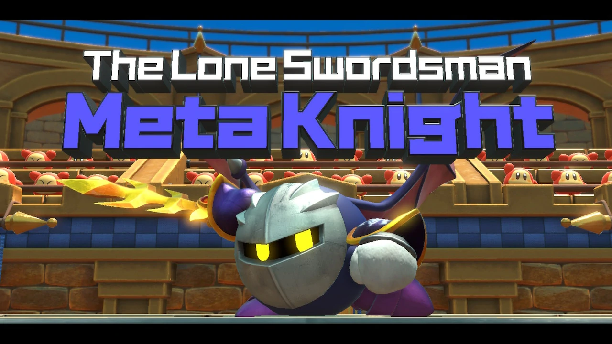
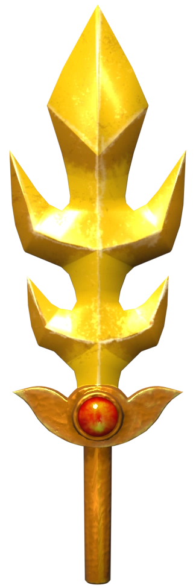

The legendary sword Galaxia is Meta Knight's signature weapon. It's a golden blade adorned with a ruby. The sword has spikes coming out of its edges. Galaxia can be used as a typical sword, and it can also shoot out sword beams.
Meta Knight
The stoic and enigmatic swordsman
Meta Knight is a major character in the Kirby series. He's a highly skilled, but mysterious, swordsman who wears a silver mask and a dark purple cape.

Background
He was first introduced as an antagonist in Kirby's Adventure (1993), but in more recent games he's appeared as one of Kirby's allies and sometimes even a playable character.

He never reveals his face, except in rare occasions when his mask is broken. His signature weapon is Galaxia, a golden sword.
Meta Knight is the leader of the group of warriors known as the Meta-Knights. He is also the captain of his airship, the Battleship Halberd.
Despite being a very serious character, Meta Knight is also known to have a softer side and cares a lot about those close to him. It is also rumored that Meta Knight has a sweet tooth.
Weaponry
Meta Knight's weapons are fit for a swordsman like him.
Galaxia

Dimensional Cape
With the Dimensional Cape, Meta Knight is able to manipulate space. He can wrap it around himself to warp and teleport away.